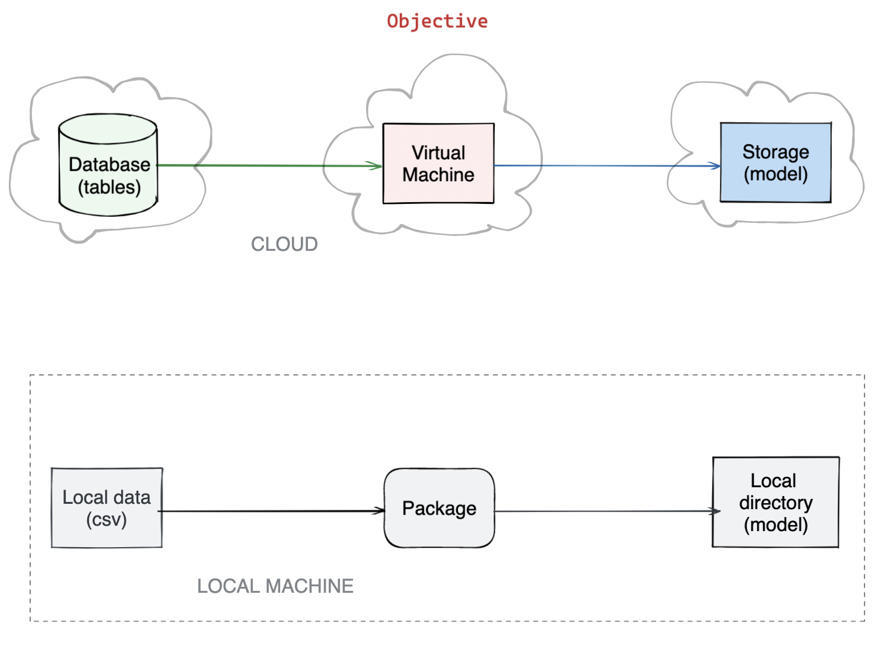
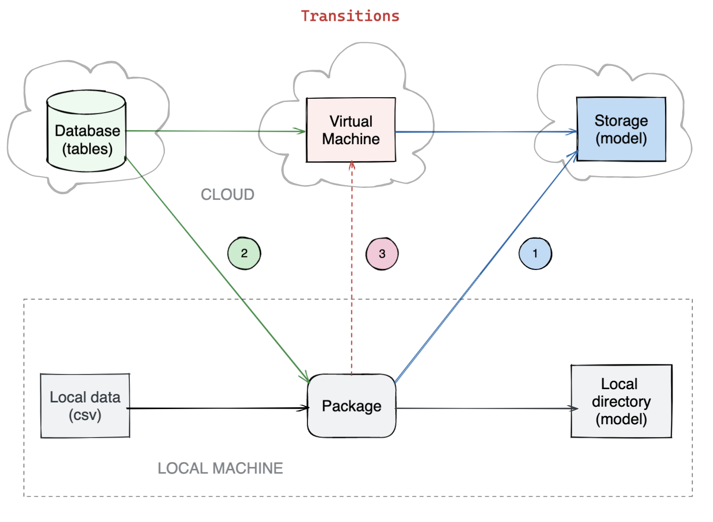
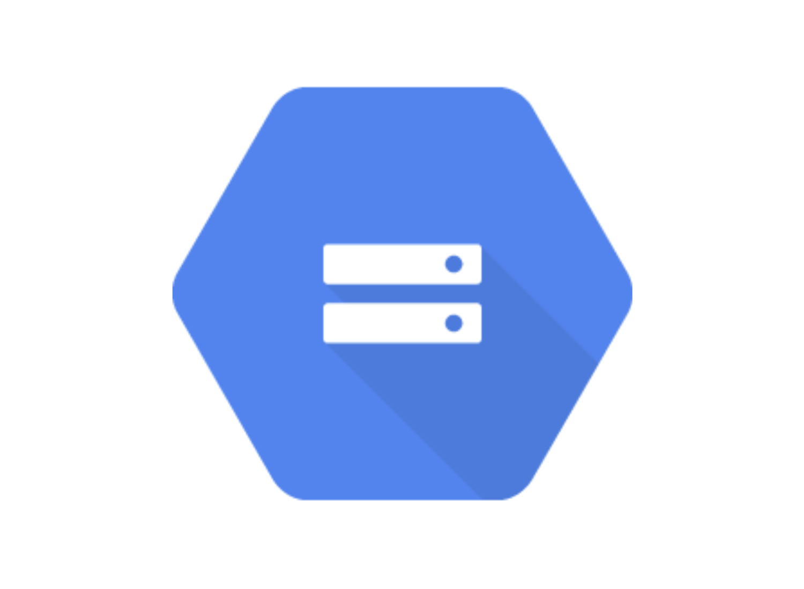
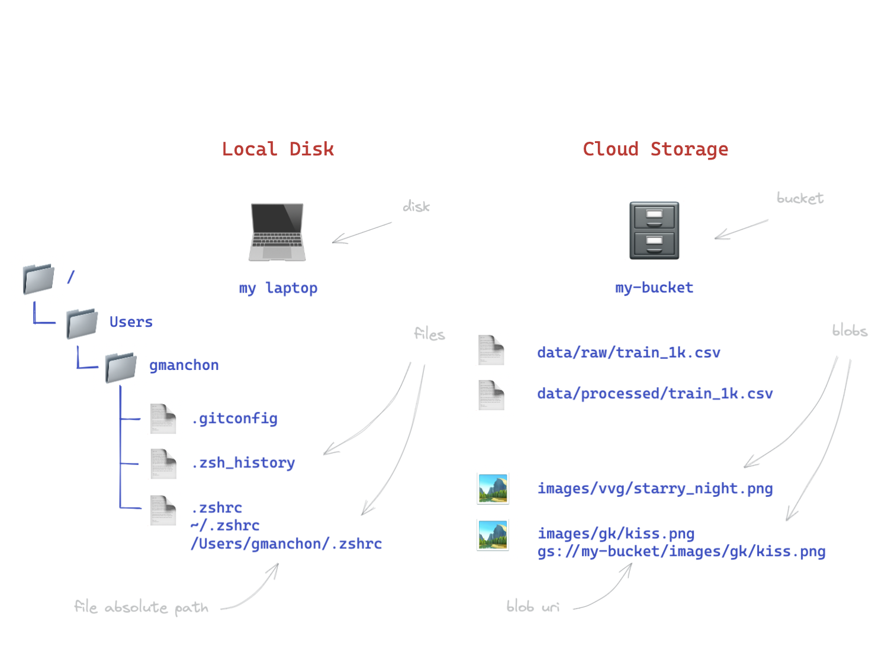
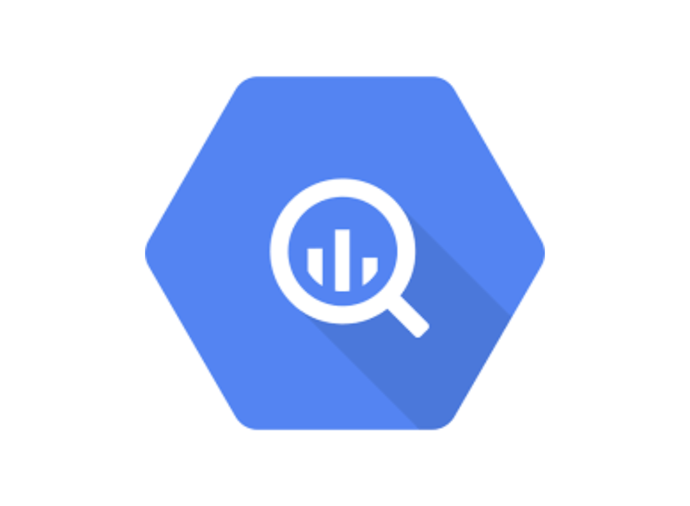
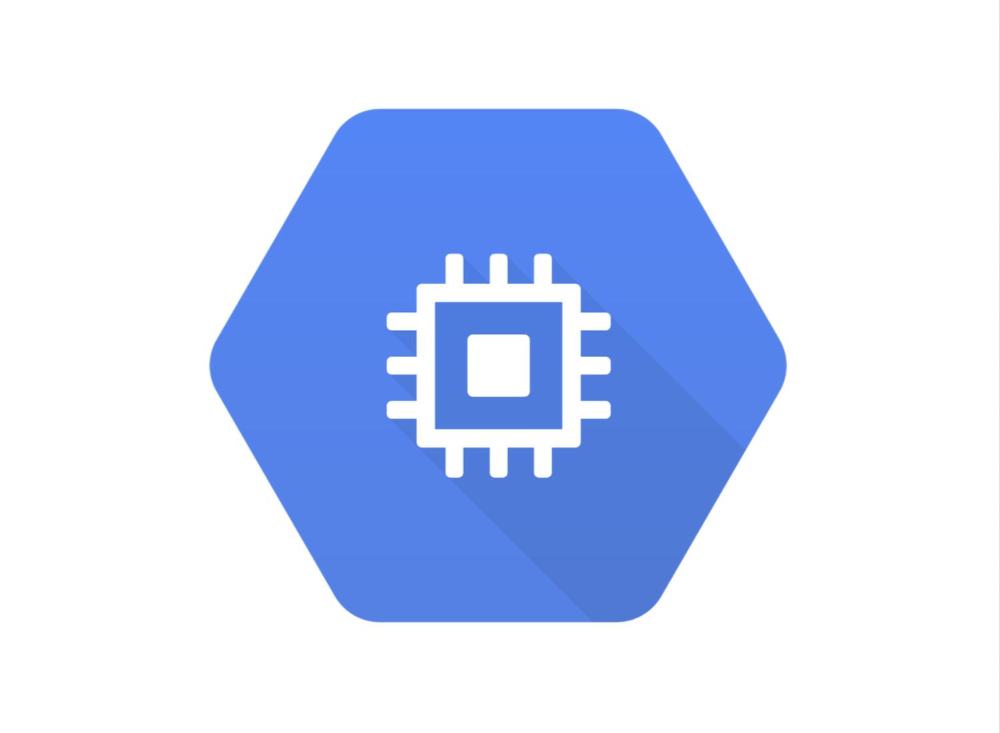
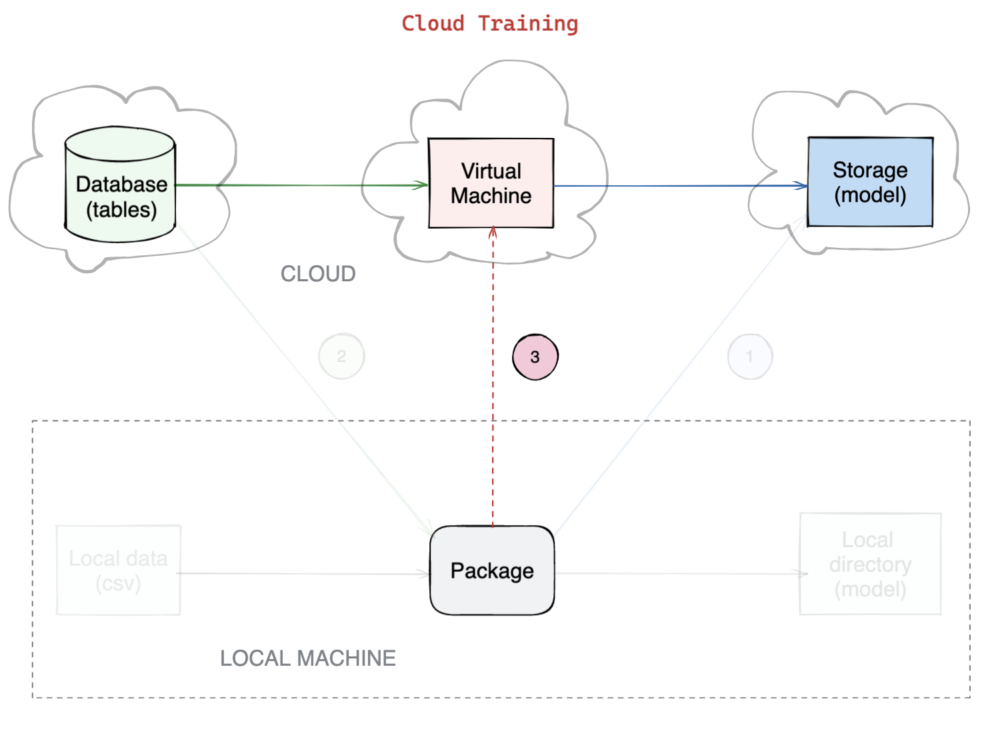

Training in the Cloud
Découpler un projet ML de la machine locale — stocker les modèles sur Google Cloud Storage, lire les données depuis BigQuery, gérer la configuration via `.env`, et entraîner sur une VM dans le cloud avec Google Compute Engine.
- Cheatsheet — Training in the Cloud
- ️ Récapitulatif — Erreurs clés à éviter
- 1) Objectif — Du local au cloud
- 2) Google Cloud Platform (GCP)
- 3) Configuration avec `.env`
- 4) Modèle dans le cloud — Google Cloud Storage
- 5) Données dans le cloud — Google BigQuery
- 6) Entraînement dans le cloud — Google Compute Engine
- Bibliographie
- Challenges
📋 Cheatsheet — Training in the Cloud
Configuration avec .env et direnv
## .env — variables d'environnement du projet
MODEL_TARGET=gcs # local | gcs
DATA_SOURCE=big_query # local | big_query
BUCKET_NAME=my-bucket-name
PROJECT=my-gcp-project
DATASET=taxifare_dataset
## .envrc — loader (à côté du .env)
dotenv
## Activer
direnv allow . # charge les variables dans l'environnement
direnv reload # recharge après modification
echo $MODEL_TARGET # vérifie la valeur## params.py — charger les variables dans Python
import os
MODEL_TARGET = os.environ.get("MODEL_TARGET") # None si absent
BUCKET_NAME = os.environ["BUCKET_NAME"] # erreur si absentGoogle Cloud Storage (GCS) — Stocker les modèles
## CLI — gsutil
gsutil ls # liste les buckets
gsutil mb -l europe-west1 -p $PROJECT gs://$BUCKET # crée un bucket
gsutil ls gs://$BUCKET # liste les blobs
gsutil cp model.joblib gs://$BUCKET/ # upload un fichier
gsutil cp gs://$BUCKET/model.joblib . # download un fichier## Code Python — upload/download
from google.cloud import storage
client = storage.Client()
bucket = client.bucket(BUCKET_NAME)
## Upload
blob = bucket.blob("models/model.joblib")
blob.upload_from_filename("model.joblib") # local → cloud
## Download
blob = bucket.blob("models/model.joblib")
blob.download_to_filename("model.joblib") # cloud → localGoogle BigQuery — Lire/écrire les données
from google.cloud import bigquery
import pandas as pd
client = bigquery.Client(project=PROJECT)
## Lire une table
query = f"SELECT * FROM {PROJECT}.{DATASET}.processed_1k"
df = client.query(query).result().to_dataframe() # résultat en DataFrame
## Écrire un DataFrame
table = f"{PROJECT}.{DATASET}.lecture_data"
job_config = bigquery.LoadJobConfig(write_disposition="WRITE_TRUNCATE") # ou WRITE_APPEND
job = client.load_table_from_dataframe(df, table, job_config=job_config)
job.result() # attend la fin du job## CLI — bq
bq ls # liste les datasets
bq ls $DATASET # liste les tables d'un dataset
bq show $DATASET.$TABLE # affiche le schéma
bq query "SELECT * FROM $DATASET.$TABLE LIMIT 5"Google Compute Engine — VM dans le cloud
## CLI — gcloud compute
gcloud compute instances list # liste les VMs
gcloud compute instances start $INSTANCE # démarre
gcloud compute instances stop $INSTANCE # arrête (⚠️ penser à stopper !)
## Connexion SSH
gcloud compute ssh $INSTANCE # shell interactif
gcloud compute ssh $INSTANCE --command "ls -la" # commande unique
## Copie de fichiers
gcloud compute scp --recurse ./project $INSTANCE:~/ # local → VM
gcloud compute scp --recurse $INSTANCE:~/ . # VM → local⚠️ Récapitulatif — Erreurs clés à éviter
Commiter le fichier .env dans Git
Le .env contient des credentials, des API keys et des secrets — il ne doit jamais être versionné.
❌ git add .env → credentials exposées sur GitHub
✅ Ajouter .env dans .gitignore dès la création du projet
Oublier d'arrêter une VM après l'entraînement
Les VMs facturent tant qu'elles sont allumées, même si aucun calcul ne tourne.
❌ Laisser une VM GPU tourner pendant le weekend → facture de centaines de dollars
✅ gcloud compute instances stop $INSTANCE après chaque session + configurer un auto-shutdown
Utiliser SELECT * sur BigQuery sans limiter les colonnes
BigQuery facture par volume de données scannées, pas par nombre de lignes retournées. LIMIT ne réduit pas le coût.
❌ SELECT * FROM dataset.table LIMIT 10 → scanne toutes les colonnes (facturé au TB)
✅ SELECT col1, col2 FROM dataset.table → ne scanne que les colonnes nécessaires
Hardcoder des chemins locaux dans le code
Le code doit fonctionner sur n'importe quelle machine (locale, VM, CI/CD).
❌ model_path = "/Users/jean/models/model.pkl" → casse sur la VM
✅ Utiliser des variables d'environnement via .env + os.environ pour tous les chemins et configurations
Confondre WRITE_TRUNCATE et WRITE_APPEND dans BigQuery
TRUNCATE écrase toute la table existante, APPEND ajoute à la suite.
❌ WRITE_TRUNCATE sur une table de production → perte de toutes les données historiques
✅ Toujours vérifier le write_disposition avant d'écrire, et utiliser WRITE_APPEND pour les ajouts incrémentaux
1) Objectif — Du local au cloud
1.1 Où en sommes-nous ?
Le Data Scientist a créé un modèle dans un notebook. Le ML Engineer doit maintenant le rendre opérationnel :
- ✅ Analyser le notebook
- ✅ Packager le code en module Python
- ✅ Entraîner à grande échelle (incremental processing)
- 🎯 Passer au cloud : modèle, données et entraînement

1.2 Les trois transitions

| Transition | Local | Cloud |
|---|---|---|
| Modèle | Fichier .pkl sur le disque | Blob dans Google Cloud Storage |
| Données | CSV local | Table dans Google BigQuery |
| Exécution | Machine locale | VM Google Compute Engine |
1.3 Structure du package mise à jour
.
├── .env # variables de configuration
├── .envrc # loader direnv
├── Makefile
├── requirements.txt
├── setup.py
├── taxifare/
│ ├── __init__.py
│ ├── interface/
│ │ └── main.py # point d'entrée
│ ├── ml_logic/
│ │ ├── data.py # load/store depuis BigQuery
│ │ ├── registry.py # load/store modèle depuis GCS
│ │ └── ...
│ ├── params.py # charge les variables .env
│ └── utils.py
└── tests/2) Google Cloud Platform (GCP)
2.1 Couches de service
| Couche | Principe | Exemple GCP | Vous gérez |
|---|---|---|---|
| On-premise | Votre propre serveur | — | Tout (hardware, OS, code) |
| IaaS | VM dans le cloud | Compute Engine | OS + environnement |
| PaaS | Plateforme managée | Cloud Run | Le package uniquement |
| SaaS | Service prêt à l'emploi | BigQuery | Les requêtes |
2.2 Comparaison des cloud providers
| Provider | Storage | Database | Compute |
|---|---|---|---|
| Cloud Storage | BigQuery | Compute Engine | |
| AWS | S3 | Athena / Redshift | EC2 |
| Azure | Blob Storage | Synapse Analytics | Virtual Machines |
2.3 Interfaces GCP
- 🌍 Web console : exploration, opérations ponctuelles
- 💻 CLI (
gcloud,gsutil,bq) : plus rapide, opérations précises - 🧬 Code (Python SDK) : pour les comportements à automatiser
2.4 Authentification
gcloud init # setup CLI
gcloud auth application-default login # setup code Python
gcloud projects list # liste les projets
gcloud services list --enabled # liste les APIs activées3) Configuration avec .env
3.1 Pourquoi ?
Le comportement du package doit s'adapter au contexte d'exécution (local vs cloud, dev vs prod, collaborateurs différents) sans modifier le code.
👉 12-Factor App — Separate config from code
3.2 Fichier .env
## .env
MODEL_TARGET=gcs
DATA_SOURCE=big_query
BUCKET_NAME=taxifare-models
PROJECT=my-gcp-project
DATASET=taxifare_datasetNe JAMAIS commiter .env dans Git — il contient des credentials et des secrets. Vérifier que .env est dans .gitignore.
3.3 Chargement avec direnv
## .envrc (à côté du .env)
dotenv
## Activer
direnv allow .3.4 Utilisation dans le code
## taxifare/params.py
import os
MODEL_TARGET = os.environ.get("MODEL_TARGET") # retourne None si absent
BUCKET_NAME = os.environ["BUCKET_NAME"] # lève KeyError si absent## taxifare/ml_logic/registry.py
from taxifare.params import MODEL_TARGET
if MODEL_TARGET == "local":
# sauvegarder en local
elif MODEL_TARGET == "gcs":
# sauvegarder sur Cloud Storage4) Modèle dans le cloud — Google Cloud Storage
4.1 Concepts

- Bucket : conteneur de blobs (nom unique mondial, pas d'arborescence réelle)
- Blob : fichier immuable stocké dans un bucket (URI :
gs://bucket-name/blob/name)

4.2 CLI — gsutil
gsutil ls # liste les buckets
gsutil mb -l europe-west1 -p $PROJECT gs://$BUCKET # crée un bucket
gsutil ls -r gs://$BUCKET # liste récursive
gsutil cp model.joblib gs://$BUCKET/ # upload
gsutil cp gs://$BUCKET/model.joblib . # download4.3 Code Python
from google.cloud import storage
BUCKET_NAME = "my-bucket"
client = storage.Client()
bucket = client.bucket(BUCKET_NAME)
## Upload
blob = bucket.blob("models/model.joblib")
blob.upload_from_filename("model.joblib")
## Download
blob = bucket.blob("models/model.joblib")
blob.download_to_filename("model.joblib")5) Données dans le cloud — Google BigQuery
5.1 Concepts

Data warehouse managé — gère des pétaoctets de données. Structure : Dataset (base de données) → Tables.
5.2 Lire une table
from google.cloud import bigquery
client = bigquery.Client(project="my-project")
query = "SELECT col1, col2 FROM my-project.taxifare.processed_1k"
df = client.query(query).result().to_dataframe()5.3 Écrire un DataFrame
table = "my-project.taxifare.lecture_data"
job_config = bigquery.LoadJobConfig(write_disposition="WRITE_TRUNCATE")
job = client.load_table_from_dataframe(df, table, job_config=job_config)
job.result()5.4 CLI — bq
bq ls # datasets
bq ls taxifare # tables du dataset
bq show taxifare.processed_1k # schéma de la table
bq query "SELECT * FROM taxifare.processed_1k LIMIT 5"5.5 Coût des requêtes
BigQuery facture par volume de données scannées, pas par lignes retournées. LIMIT ne réduit pas le coût. Toujours sélectionner uniquement les colonnes nécessaires et utiliser le flag --dry_run pour estimer le coût avant d'exécuter.
6) Entraînement dans le cloud — Google Compute Engine
6.1 Concepts

Une VM (Virtual Machine) est un ordinateur dans le cloud — sans écran, accessible via SSH. On choisit la région, le hardware (CPU/GPU), l'OS.
6.2 Gestion des VMs
gcloud compute instances list # liste les VMs
gcloud compute instances start $INSTANCE # démarre
gcloud compute instances stop $INSTANCE # TOUJOURS arrêter après usage !6.3 Connexion et transfert de fichiers
gcloud compute ssh $INSTANCE # connexion SSH interactive
gcloud compute ssh $INSTANCE --command "python -m taxifare.interface.main" # commande distante
gcloud compute scp --recurse ./taxifare $INSTANCE:~/ # copie locale → VMToujours arrêter la VM après l'entraînement — les VMs GPU coûtent plusieurs dollars/heure. Configurer un auto-shutdown si possible.
6.4 Workflow complet
- Créer une VM (web console ou CLI) avec Ubuntu + GPU si nécessaire
- Se connecter en SSH
- Transférer le code avec
scp - Installer les dépendances (
pip install -e .) - Lancer l'entraînement (
make run_train) - Le modèle est automatiquement sauvé sur GCS (via
registry.py) - Arrêter la VM

📚 Bibliographie
- 👉 Google Cloud — AWS — Azure comparison
- 👉 Cloud Storage cheatsheet
- 👉 BigQuery cheatsheet
- 👉 Compute Engine cheatsheet
- 👉 BigQuery cost best practices
- 👉 12-Factor App
🚀 Challenges
- Configurer le
.envpour basculer entre local et cloud - Sauvegarder le modèle entraîné sur Google Cloud Storage
- Charger les données d'entraînement depuis BigQuery
- Lancer l'entraînement complet sur une VM Google Compute Engine
- 🧭 Introduction
- 1. Du local au cloud — les trois transitions
- 2. Google Cloud Platform — comprendre l'écosystème
- 3. Configuration avec `.env` — adapter sans modifier le code
- 4. Stocker les modèles — Google Cloud Storage (GCS)
- 5. Lire les données — Google BigQuery
- 6. Entraîner dans le cloud — Google Compute Engine
- 7. Les erreurs classiques à éviter
- 🎯 Questions de vérification
- 📌 TL;DR
🧭 Introduction
Jusqu'ici, tu as entraîné tes modèles sur ton ordinateur. C'est pratique pour apprendre, mais en production c'est insuffisant : ton laptop ne peut pas traiter des millions de lignes, tourne trop lentement, et s'arrête quand tu fermes le couvercle.
La solution ? Louer un supercalculateur à l'heure dans le cloud. Tu paies uniquement quand tu l'utilises, comme une voiture en autopartage — tu la prends, tu fais ton trajet, tu la rends. Ici : tu allumes une VM (machine virtuelle), tu entraînes ton modèle, tu l'éteins.
Ce cours explique comment basculer un projet Machine Learning du local vers le cloud avec Google Cloud Platform (GCP), en trois étapes :
- Stocker ton modèle sur Google Cloud Storage (GCS)
- Lire tes données depuis Google BigQuery
- Lancer l'entraînement sur une VM Google Compute Engine
À retenir absolument
- Un bucket GCS est comme un disque dur en ligne — tu y déposes et récupères des fichiers.
- BigQuery est une base de données géante dans le cloud — elle peut gérer des téraoctets de données.
- Une VM (Virtual Machine) est un ordinateur qui tourne quelque part dans un datacenter Google — tu t'y connectes via le terminal.
- Le fichier
.envstocke toutes les variables de configuration (project, bucket, etc.) sans toucher au code. - Toujours éteindre la VM après usage — elle coûte de l'argent tant qu'elle tourne.
Mini-plan du cours
1. Du local au cloud — les 3 transitions
2. Google Cloud Platform — comprendre l'écosystème
3. Configuration avec .env — adapter le code sans le modifier
4. Google Cloud Storage — stocker les modèles
5. Google BigQuery — lire les données
6. Google Compute Engine — entraîner sur une VM1. Du local au cloud — les trois transitions
Où en est-on ?
Imagine que tu es un ML Engineer. Le Data Scientist t'a remis un notebook qui entraîne un modèle. Tu as déjà :
- Analysé le notebook
- Transformé le code en package Python propre
- Géré l'entraînement incrémental (sur des gros volumes)
Il reste une étape : tout passer dans le cloud.
Les trois basculements
| Ce qu'on déplace | Avant (local) | Après (cloud) |
|---|---|---|
| Le modèle entraîné | Fichier .pkl sur ton disque dur | Blob dans Google Cloud Storage |
| Les données | Fichier CSV sur ton ordinateur | Table dans Google BigQuery |
| L'exécution | Ton laptop | VM Google Compute Engine |
Analogie concrète : Avant, tu cuisinais chez toi avec tes ingrédients dans ton frigo et ton modèle de plat dans un tiroir. Maintenant, les ingrédients sont dans un entrepôt (BigQuery), la recette finale est dans un coffre-fort en ligne (GCS), et tu cuisines dans une cuisine professionnelle louée à l'heure (VM).
La structure du projet
Voici comment le dossier du projet est organisé :
.
├── .env ← variables de configuration (jamais commitées)
├── .envrc ← chargeur automatique des variables
├── Makefile ← raccourcis de commandes
├── requirements.txt
├── setup.py
├── taxifare/
│ ├── interface/
│ │ └── main.py ← point d'entrée du programme
│ ├── ml_logic/
│ │ ├── data.py ← lit/écrit depuis BigQuery
│ │ └── registry.py ← charge/sauvegarde le modèle depuis GCS
│ └── params.py ← lit les variables .env
└── tests/Le fichier registry.py est le "chef d'aiguillage" : selon la valeur de MODEL_TARGET, il sauvegarde le modèle en local ou sur GCS. Le code métier ne change pas — seule la configuration change.
2. Google Cloud Platform — comprendre l'écosystème
Les niveaux de service cloud
Quand tu utilises le cloud, tu peux choisir différents niveaux d'autonomie/responsabilité :
| Niveau | Principe | Exemple GCP | Tu gères… |
|---|---|---|---|
| On-premise | Ton propre serveur | — | Tout (matériel, OS, code) |
| IaaS | VM dans le cloud | Compute Engine | L'OS et l'environnement |
| PaaS | Plateforme managée | Cloud Run | Ton code uniquement |
| SaaS | Service clé en main | BigQuery | Tes requêtes uniquement |
Exemple concret : IaaS c'est louer un appartement vide (tu mets tes meubles). SaaS c'est réserver une chambre d'hôtel (tout est fourni). On utilise les deux dans ce cours.
Les trois grands clouds
| Provider | Stockage fichiers | Données | Calcul |
|---|---|---|---|
| Google (GCP) | Cloud Storage | BigQuery | Compute Engine |
| Amazon (AWS) | S3 | Athena / Redshift | EC2 |
| Microsoft (Azure) | Blob Storage | Synapse Analytics | Virtual Machines |
Dans ce cours on utilise GCP, mais les concepts sont identiques sur AWS ou Azure.
Trois façons d'interagir avec GCP
- Console web (navigateur) : pratique pour explorer, faire des opérations ponctuelles
- CLI (
gcloud,gsutil,bq) : plus rapide, idéal pour des opérations précises en ligne de commande - SDK Python : pour automatiser dans le code
Authentification — se connecter à GCP
Avant d'utiliser quoi que ce soit, tu dois t'authentifier :
# Initialiser la CLI Google Cloud (à faire une fois)
gcloud init
# Autoriser le code Python à accéder à GCP
gcloud auth application-default login
# Vérifier les projets disponibles
gcloud projects list
# Voir les APIs activées sur ton projet
gcloud services list --enabledgcloud init configure le CLI pour toi (humain). gcloud auth application-default login configure les identifiants pour Python (ton code). Les deux sont nécessaires.
3. Configuration avec .env — adapter sans modifier le code
Pourquoi ne pas hardcoder les valeurs ?
Imagine que tu écris dans ton code :
# MAUVAISE PRATIQUE — ne jamais faire ça
model_path = "/Users/jean/models/model.pkl"
project = "mon-projet-gcp-123"Problèmes :
- Ce chemin ne fonctionne que sur ta machine
- Quand tu passes sur la VM, ça casse
- Si ton collègue clone le projet, ça casse aussi
- Si tu commites ça sur GitHub, tes credentials sont publics
La bonne pratique : séparer la configuration du code.
Le fichier .env
Crée un fichier .env à la racine de ton projet :
# .env — NE JAMAIS COMMITER CE FICHIER
MODEL_TARGET=gcs # "local" ou "gcs" — où sauvegarder le modèle
DATA_SOURCE=big_query # "local" ou "big_query" — où lire les données
BUCKET_NAME=taxifare-models
PROJECT=mon-projet-gcp
DATASET=taxifare_datasetCRITIQUE : ne jamais ajouter .env à Git. Ce fichier peut contenir des clés API, des mots de passe, des identifiants. Ajoute .env dans ton fichier .gitignore dès la création du projet. Une seule fuite suffit à compromettre ton compte cloud.
direnv — charger automatiquement les variables
Sans outil, tu devrais taper export MODEL_TARGET=gcs à chaque fois que tu ouvres un terminal. direnv fait ça automatiquement quand tu entres dans le dossier du projet.
# .envrc (fichier à côté du .env)
dotenv # ← cette ligne dit à direnv de charger le .env
# Une fois pour autoriser direnv à lire ce dossier
direnv allow .
# Si tu modifies le .env, recharger
direnv reload
# Vérifier qu'une variable est bien chargée
echo $MODEL_TARGET # doit afficher "gcs"Lire les variables en Python
Dans params.py, tu centralises la lecture de toutes les variables :
# taxifare/params.py
import os
# os.environ.get() retourne None si la variable n'existe pas (pas d'erreur)
MODEL_TARGET = os.environ.get("MODEL_TARGET")
# os.environ[] lève une erreur si la variable est absente (plus strict)
BUCKET_NAME = os.environ["BUCKET_NAME"]
PROJECT = os.environ["PROJECT"]
DATASET = os.environ["DATASET"]Ensuite, dans registry.py, tu utilises MODEL_TARGET pour décider où sauvegarder :
# taxifare/ml_logic/registry.py
from taxifare.params import MODEL_TARGET
def save_model(model):
if MODEL_TARGET == "local":
# sauvegarde en local sur le disque
model.save("models/model.pkl")
elif MODEL_TARGET == "gcs":
# sauvegarde sur Google Cloud Storage
upload_model_to_gcs(model)Le bénéfice : pour passer de "local" à "cloud", il suffit de changer une ligne dans le .env. Le code Python ne change pas du tout.
4. Stocker les modèles — Google Cloud Storage (GCS)
Comprendre GCS
Google Cloud Storage c'est comme un disque dur dans le cloud, mais avec quelques différences :
- Bucket : le "conteneur" (pense à un dossier racine). Son nom doit être unique dans le monde entier.
- Blob : un fichier dans le bucket (une image, un modèle
.joblib, un CSV…). Son chemin complet ressemble àgs://mon-bucket/models/v1/model.joblib.
Contrairement à un vrai système de fichiers, il n'y a pas vraiment de sous-dossiers — c'est une illusion créée par les / dans les noms de blobs.
Gérer GCS avec la CLI gsutil
# Lister tous tes buckets
gsutil ls
# Créer un bucket dans la région europe-west1
gsutil mb -l europe-west1 -p $PROJECT gs://$BUCKET_NAME
# Lister le contenu d'un bucket
gsutil ls gs://$BUCKET_NAME
# Lister récursivement (tous les sous-dossiers)
gsutil ls -r gs://$BUCKET_NAME
# Uploader un fichier local vers GCS
gsutil cp model.joblib gs://$BUCKET_NAME/models/
# Télécharger un fichier depuis GCS vers le local
gsutil cp gs://$BUCKET_NAME/models/model.joblib .gsutil fonctionne exactement comme la commande cp de Linux/Mac — cp source destination. Pour GCS, les chemins commencent par gs://.
Upload et download en Python
Pour automatiser dans le code, on utilise le SDK Python de Google Cloud :
from google.cloud import storage
# Paramètres
BUCKET_NAME = "mon-bucket-taxifare"
# Créer un client — il utilise les credentials de gcloud auth application-default login
client = storage.Client()
# Accéder au bucket
bucket = client.bucket(BUCKET_NAME)
# --- UPLOAD : envoyer un fichier local vers GCS ---
blob = bucket.blob("models/model.joblib") # nom du fichier dans le bucket
blob.upload_from_filename("model.joblib") # chemin du fichier local
# Résultat : gs://mon-bucket-taxifare/models/model.joblib
# --- DOWNLOAD : récupérer un fichier depuis GCS ---
blob = bucket.blob("models/model.joblib") # fichier à récupérer dans le bucket
blob.download_to_filename("model.joblib") # où le sauvegarder en localRécap : upload_from_filename(local) pousse vers le cloud. download_to_filename(local) tire depuis le cloud.
Un "blob" en anglais signifie "Binary Large OBject" — c'est le terme générique pour un fichier dans un système de stockage cloud. Dans la vie de tous les jours, c'est juste un fichier.
5. Lire les données — Google BigQuery
Comprendre BigQuery
BigQuery est un data warehouse (entrepôt de données) dans le cloud. Il peut gérer des pétaoctets de données et répondre à des requêtes SQL en quelques secondes.
Structure :
- Dataset : équivalent d'une "base de données" (ex:
taxifare_dataset) - Table : une table SQL classique avec des lignes et des colonnes
Différence clé avec un CSV local : si ton CSV fait 50 Go, tu ne peux pas le charger en RAM. BigQuery lui, peut traiter 50 To sans problème — il fait les calculs côté serveur et te renvoie uniquement le résultat.
Lire une table BigQuery en Python
from google.cloud import bigquery
# Créer un client BigQuery pour ton projet GCP
client = bigquery.Client(project="mon-projet-gcp")
# Écrire une requête SQL — exactement comme du SQL classique
query = "SELECT col1, col2 FROM mon-projet-gcp.taxifare_dataset.processed_1k"
# Exécuter la requête et récupérer un DataFrame pandas
df = client.query(query).result().to_dataframe()
# df est maintenant un DataFrame pandas ordinaire !
print(df.head())Explication ligne par ligne :
client.query(query): envoie la requête à BigQuery.result(): attend que BigQuery termine le calcul.to_dataframe(): convertit le résultat en DataFrame pandas
Écrire un DataFrame dans BigQuery
from google.cloud import bigquery
client = bigquery.Client(project="mon-projet-gcp")
# Destination : project.dataset.table
table = "mon-projet-gcp.taxifare_dataset.nouvelles_donnees"
# Configurer le job d'écriture
job_config = bigquery.LoadJobConfig(
write_disposition="WRITE_TRUNCATE" # WRITE_TRUNCATE = écrase, WRITE_APPEND = ajoute
)
# Lancer l'écriture (asynchrone — on attend la fin avec .result())
job = client.load_table_from_dataframe(df, table, job_config=job_config)
job.result() # attend que BigQuery ait terminé avant de continuer
print("Données écrites avec succès !")Attention à write_disposition :
- WRITE_TRUNCATE : supprime tout le contenu de la table existante, puis écrit. Si tu l'appliques sur une table de production avec des mois de données, tout est perdu.
- WRITE_APPEND : ajoute les nouvelles lignes à la suite des existantes.
Toujours vérifier avant d'exécuter !
Gérer BigQuery avec la CLI bq
# Lister tous les datasets de ton projet
bq ls
# Lister les tables d'un dataset
bq ls taxifare_dataset
# Afficher le schéma d'une table (colonnes et types)
bq show taxifare_dataset.processed_1k
# Exécuter une requête rapide
bq query "SELECT * FROM taxifare_dataset.processed_1k LIMIT 5"Le coût des requêtes BigQuery
BigQuery facture au volume scanné, pas au nombre de lignes retournées.
-- MAUVAIS : scanne TOUTES les colonnes de la table (facturé au téraoctet)
SELECT * FROM taxifare_dataset.processed_1k LIMIT 10
-- BON : ne scanne que les colonnes nécessaires (beaucoup moins cher)
SELECT pickup_longitude, dropoff_longitude FROM taxifare_dataset.processed_1k LIMIT 10Le LIMIT ne réduit pas le coût — BigQuery scanne d'abord toute la table, puis filtre. Pour estimer le coût avant d'exécuter une requête : bq query --dry_run "SELECT ...". Cela affiche la quantité de données qui serait scannée, sans rien facturer.
6. Entraîner dans le cloud — Google Compute Engine
Qu'est-ce qu'une VM ?
Une VM (Virtual Machine) est un ordinateur qui tourne dans un datacenter Google. Elle n'a pas d'écran — tu t'y connectes via SSH (une connexion sécurisée en ligne de commande), exactement comme si tu ouvrais un terminal sur cet ordinateur distant.
Tu choisis :
- La région (Europe, USA, Asie…)
- Le hardware : CPU classique, ou GPU pour accélérer l'entraînement
- L'OS : Ubuntu en général
Pourquoi une VM et pas ton laptop ?
- Ton laptop a 16 Go de RAM et 8 cœurs. Une VM GPU peut avoir 80 Go de RAM, 32 cœurs et des GPU dédiés.
- L'entraînement tourne 24h/24 sans que tu gardes ton ordi allumé.
- Tu peux en créer plusieurs en parallèle.
Gérer les VMs avec gcloud compute
# Lister toutes tes VMs
gcloud compute instances list
# Démarrer une VM (elle existe déjà, on l'allume)
gcloud compute instances start mon-instance
# Arrêter une VM — TOUJOURS faire ça après l'entraînement !
gcloud compute instances stop mon-instanceUne VM GPU coûte entre 1 et 5 dollars PAR HEURE. Si tu oublies de l'éteindre le vendredi soir, tu te retrouves avec une facture de 240$ le lundi matin. Prends l'habitude de toujours stopper la VM à la fin de chaque session.
Se connecter et transférer des fichiers
# Ouvrir un terminal interactif sur la VM (comme si tu t'asseyais devant elle)
gcloud compute ssh mon-instance
# Exécuter une commande sur la VM sans ouvrir un terminal interactif
gcloud compute ssh mon-instance --command "python -m taxifare.interface.main"
# Copier ton code local vers la VM
gcloud compute scp --recurse ./taxifare mon-instance:~/
# Copier des fichiers de la VM vers ton local
gcloud compute scp --recurse mon-instance:~/ .scp = "Secure Copy Protocol". --recurse signifie "copier aussi les sous-dossiers". L'adresse mon-instance:~/ désigne le dossier home de l'utilisateur sur la VM.
Le workflow complet d'entraînement cloud
Voici les étapes dans l'ordre, du début à la fin :
Étape 1 — Créer la VM
→ Console web GCP ou CLI : choisir région, CPU/GPU, OS Ubuntu
Étape 2 — Démarrer la VM
→ gcloud compute instances start mon-instance
Étape 3 — Copier le code sur la VM
→ gcloud compute scp --recurse ./taxifare mon-instance:~/
Étape 4 — Se connecter en SSH
→ gcloud compute ssh mon-instance
Étape 5 — Installer les dépendances (sur la VM)
→ pip install -e .
Étape 6 — Lancer l'entraînement (sur la VM)
→ make run_train
(ou python -m taxifare.interface.main)
Étape 7 — Le modèle est sauvegardé automatiquement sur GCS
→ registry.py détecte MODEL_TARGET=gcs et upload sur le bucket
Étape 8 — ARRÊTER LA VM
→ gcloud compute instances stop mon-instanceAprès l'entraînement, le modèle est sur GCS et les données restent dans BigQuery. La VM peut être éteinte — elle n'est plus nécessaire. Tu peux récupérer le modèle depuis n'importe quelle machine avec gsutil cp gs://mon-bucket/models/model.joblib .
7. Les erreurs classiques à éviter
Commiter le .env dans Git
# DANGEREUX — expose tous tes secrets sur GitHub
git add .env
git commit -m "ajout config" # ← NE JAMAIS FAIRE ÇA
# CORRECT — s'assurer que .env est ignoré
# Dans .gitignore :
.envHardcoder des chemins locaux
# MAUVAIS — casse sur la VM, casse chez les collègues
model_path = "/Users/jean/Desktop/models/model.pkl"
# CORRECT — fonctionne partout
import os
model_path = os.environ.get("MODEL_PATH", "models/model.pkl")Laisser une VM allumée
# Après chaque session d'entraînement, obligatoirement :
gcloud compute instances stop mon-instance
# Vérifier l'état de ses VMs
gcloud compute instances list # STATUS doit afficher TERMINATED, pas RUNNINGUtiliser SELECT * dans BigQuery
-- MAUVAIS : scanne toute la table (peut coûter cher)
SELECT * FROM taxifare_dataset.processed_1k
-- CORRECT : sélectionner uniquement les colonnes utiles
SELECT fare_amount, trip_distance, pickup_datetime
FROM taxifare_dataset.processed_1k🎯 Questions de vérification
1. Quelle est la différence entre un bucket et un blob dans Google Cloud Storage ?
Un bucket est le conteneur racine (comme un dossier principal, avec un nom unique mondial). Un blob est un fichier stocké dans ce bucket, accessible via une URI du type gs://nom-bucket/chemin/fichier.
2. Pourquoi ne faut-il jamais commiter le fichier .env dans Git ?
Parce qu'il contient des informations sensibles (clés API, noms de projets, credentials). Si ce fichier se retrouve sur GitHub, n'importe qui peut accéder à ton compte GCP et générer des factures ou voler des données.
3. BigQuery facture-t-il par nombre de lignes retournées ou par volume scanné ?
Par volume de données scannées (en téraoctets). Un LIMIT 10 ne réduit pas le coût car BigQuery scanne d'abord toute la table avant de filtrer. Pour réduire les coûts : sélectionner uniquement les colonnes nécessaires avec SELECT col1, col2 plutôt que SELECT *.
4. Dans quel ordre se déroule un entraînement sur une VM cloud ?
Créer/démarrer la VM → copier le code (scp) → connexion SSH → installer les dépendances → lancer l'entraînement → le modèle est sauvé sur GCS → arrêter la VM.
📌 TL;DR
- Un projet ML en production déplace trois choses vers le cloud : le modèle (GCS), les données (BigQuery) et l'exécution (VM Compute Engine).
- Le fichier
.envstocke toutes les variables de configuration ;direnvles charge automatiquement dans le terminal ;os.environles lit en Python. - Ne jamais commiter
.envdans Git — il contient des secrets. gsutil cp fichier gs://bucket/upload un fichier sur GCS ;bucket.blob(...).upload_from_filename(...)fait la même chose en Python.- BigQuery se requête en SQL depuis Python (
client.query(...).result().to_dataframe()) et facture au volume scanné, pas au nombre de lignes. - Une VM cloud se pilote avec
gcloud compute instances start/stop/sshetgcloud compute scppour les transferts de fichiers. - Toujours éteindre la VM après l'entraînement (
gcloud compute instances stop nom-instance) — les VMs GPU facturent plusieurs dollars par heure, même si aucun calcul ne tourne.
A. Concepts du cours
Pourquoi entraîner dans le cloud
Trois raisons principales pour ne plus entraîner sur votre laptop.
1. Compute : un MacBook Pro tourne ~5 min par batch sur ResNet-50. Une instance avec 8 GPUs A100 le fait en 5 secondes. Pour entraîner un modèle moderne, le local est insuffisant.
2. Données : votre dataset fait 200 Go. Vous ne pouvez pas le télécharger sur votre laptop. Le cloud le stocke et le sert aux instances de compute à très haut débit.
3. Coût opex vs capex : acheter un cluster GPU coûte 100k€ et dort 90% du temps. Louer le même cluster à l'heure coûte ~$30/h et vous ne payez que ce que vous utilisez. Pour 95% des projets, c'est moins cher.
Analogie : avant le cloud, faire du ML c'était comme avoir besoin d'un avion privé pour chaque trajet — vous étiez obligé d'en acheter un. Avec le cloud, c'est comme prendre un Uber : vous payez à la course, vous n'achetez rien, et vous avez accès à n'importe quel type de véhicule à la demande (du GPU consumer à la machine spécialisée à 8 GPUs).
Les trois grands : AWS, GCP, Azure
| AWS | GCP | Azure | |
|---|---|---|---|
| Part de marché | ~30% | ~10% | ~25% |
| Force | Maturité, écosystème | Data analytics, ML | Intégration MS, entreprise |
| ML spécifique | SageMaker | Vertex AI | Azure ML |
| Best for ML | Production complexe | DL et data analytics | Entreprises Microsoft |
Les trois offrent essentiellement les mêmes briques :
- Compute : VMs, containers, fonctions serverless
- Storage : object storage, bases de données, file systems
- ML services : training managé, model registry, déploiement
- Networking : VPC, load balancers, CDN
- IAM : gestion des identités et permissions
Pour la formation Le Wagon, GCP est souvent choisi parce qu'il est généreux avec les crédits gratuits ($300 pour les nouveaux comptes) et que son offre ML (Vertex AI) est moderne et bien intégrée.
Compute : VMs et GPUs
Une VM (Virtual Machine) est une machine virtuelle dédiée à votre usage. Sur GCP, les noms commencent par "n1", "n2", "e2"... (CPU only) ou "a2", "g2" (avec GPU).
# Créer une VM GCP avec un GPU A100
gcloud compute instances create my-train \
--machine-type=a2-highgpu-1g \ # A2 = famille optimisée GPU, 1g = 1 GPU
--accelerator=type=nvidia-tesla-a100,count=1 \ # attache un A100 40Go
--image-family=common-cu118 \ # image pré-installée avec CUDA 11.8
--image-project=deeplearning-platform-release \ # projet GCP qui héberge ces images
--zone=us-central1-a # Iowa, généralement le moins cherLes types de GPU courants (du moins cher au plus cher) :
| GPU | Mémoire | Cas d'usage | Prix/h GCP (~) |
|---|---|---|---|
| T4 | 16 Go | Inférence, petits modèles | $0.35 |
| L4 | 24 Go | Inférence moderne, fine-tuning | $0.80 |
| V100 | 16 Go | Deep learning standard | $2.50 |
| A100 40GB | 40 Go | LLM training, vision | $3.70 |
| A100 80GB | 80 Go | Très gros modèles | $5.00 |
| H100 | 80 Go | State of the art | $10+ |
Coût piège : oublier d'éteindre une VM avec GPU. Une A100 oubliée tournée pendant un week-end coûte 5×60 = 300$. Toujours configurer un shutdown automatique ou utiliser des preemptible/spot instances qui s'arrêtent automatiquement (cf. section avancée).
Stockage et data pipelines
Le bucket (S3, GCS, Azure Blob) est la base du stockage cloud :
from google.cloud import storage
client = storage.Client()
bucket = client.bucket("my-ml-bucket")
# Upload
blob = bucket.blob("data/train.parquet")
blob.upload_from_filename("local/train.parquet")
# Download
blob.download_to_filename("local/train.parquet")
# Lecture directe avec Pandas (via gcsfs)
import pandas as pd
df = pd.read_parquet("gs://my-ml-bucket/data/train.parquet")Bonnes pratiques :
- Format Parquet : 5-10x plus compact qu'un CSV, lecture sélective par colonne
- Partitionnement :
gs://bucket/data/year=2024/month=01/pour ne lire qu'une période - Lifecycle policy : supprimer automatiquement les fichiers > 90 jours
- Versioning : activer le versioning pour rollback facile
# Créer un bucket GCS
gsutil mb -l us-central1 gs://my-ml-bucket
gsutil versioning set on gs://my-ml-bucket
gsutil lifecycle set lifecycle.json gs://my-ml-bucketB. Compléments avancés
Distributed training
Pour entraîner un gros modèle, on répartit le calcul sur plusieurs GPUs (et plusieurs machines). Trois stratégies :
1. Data parallelism : chaque GPU a une copie du modèle, traite un mini-batch différent, on synchronise les gradients.
# PyTorch DDP (Distributed Data Parallel)
import torch.nn.parallel as parallel
model = parallel.DistributedDataParallel(model, device_ids=[local_rank])C'est la stratégie la plus courante. Marche bien jusqu'à ~64 GPUs.
2. Model parallelism : le modèle est trop gros pour tenir sur un GPU, donc on le découpe en couches sur plusieurs GPUs. Plus complexe.
3. Pipeline parallelism : combinaison des deux, chaque GPU traite un "stage" du modèle sur des micro-batches.
4. Tensor parallelism : un calcul matriciel est lui-même découpé sur plusieurs GPUs (utilisé pour les LLMs >70B params).
Outils modernes : DeepSpeed (Microsoft), FSDP (Meta), Accelerate (Hugging Face), MegatronLM (NVIDIA).
# Avec Hugging Face Accelerate (le plus simple)
from accelerate import Accelerator
accelerator = Accelerator()
model, optimizer, train_loader = accelerator.prepare(model, optimizer, train_loader)
for batch in train_loader:
outputs = model(batch)
loss = outputs.loss
accelerator.backward(loss)
optimizer.step()Quand passer au distribué : si votre training prend > 4-8 heures sur un seul GPU et que vous avez besoin d'itérer rapidement. Sinon, restez sur 1 GPU — c'est plus simple à debugger.
Spot instances et coûts
Les spot instances (AWS) ou preemptible VMs (GCP) sont des VMs qui peuvent être interrompues à tout moment par le cloud, en échange d'un prix divisé par 3-5.
# GCP preemptible : peut être arrêtée par GCP à tout moment (max 24h)
gcloud compute instances create my-train \
--preemptible \ # flag clé : prix divisé par ~3
--machine-type=a2-highgpu-1g \
--accelerator=type=nvidia-tesla-a100,count=1 \
--maintenance-policy=TERMINATE # obligatoire avec GPUÉconomie massive : une A100 à $1.10/h au lieu de $3.70/h.
Calcul de coût détaillé pour un entraînement de 24h :
- On-demand : $3.70/h × 24h = $88.80
- Preemptible : $1.10/h × 24h = $26.40
- Économie : $62.40 par training (~70% de réduction)
Autre exemple : un étudiant Le Wagon qui fait 10 expériences de 8h chacune :
- On-demand : 10 × 8 × $3.70 = $296 (quasi tout le crédit gratuit GCP de $300)
- Preemptible : 10 × 8 × $1.10 = $88 (il reste $212 pour d'autres projets)
Autrement dit, le simple fait de cocher --preemptible transforme un budget "1 projet" en budget "3 projets et demi". Pour un étudiant ou un projet à budget contraint, c'est incontournable.
Précautions :
- Checkpointing : sauvegarder les poids tous les N steps. Si l'instance est interrompue, vous redémarrez là où vous en étiez.
- Resilient training : utiliser un orchestrateur (Vertex AI, SageMaker) qui relance automatiquement la tâche sur une nouvelle VM.
- Plus disponible dans certaines zones : si une zone est saturée, vous attendez parfois plusieurs heures avant qu'une instance se libère.
Bonne pratique : pour tout training non urgent (recherche, exploration, entraînement nocturne), toujours utiliser des spot/preemptible. Pour de l'inférence en production, jamais (vous voulez de la disponibilité).
Vertex AI, SageMaker, Azure ML
Les services de ML managés des big clouds vous évitent de gérer l'infrastructure pour des cas standards.
Vertex AI (GCP) : plateforme unifiée pour entraîner, déployer, monitorer.
from google.cloud import aiplatform
aiplatform.init(project="my-project", location="us-central1")
# Lancer un job de training distribué
job = aiplatform.CustomTrainingJob(
display_name="train-model",
script_path="train.py",
container_uri="us-docker.pkg.dev/vertex-ai/training/pytorch-gpu.2-1:latest",
)
model = job.run(
machine_type="a2-highgpu-1g",
accelerator_type="NVIDIA_TESLA_A100",
accelerator_count=1,
args=["--epochs", "10", "--lr", "0.001"],
)
# Déployer le modèle en API
endpoint = model.deploy(machine_type="n1-standard-4")
prediction = endpoint.predict(instances=[my_input])SageMaker (AWS) : équivalent AWS. Plus mature mais plus complexe.
Azure ML : équivalent Azure. Bonne intégration avec l'écosystème Microsoft.
Avantages des plateformes managées :
- Gestion automatique de l'infrastructure (création/destruction de VMs)
- Monitoring intégré
- Versioning de modèles natif
- AutoML pour les non-experts
- Déploiement en un clic
Inconvénients :
- Vendor lock-in : difficile de migrer vers un autre cloud
- Coût : surcoût de ~30-50% par rapport à des VMs nues
- Complexité d'apprentissage : chaque plateforme a son propre vocabulaire
Recommandation pratique : pour un projet d'apprentissage ou un prototype, utilisez des VMs nues + Docker — vous comprenez ce qui se passe et c'est moins cher. Pour une équipe en production avec >10 modèles, le ML managé devient rentable. Le piège : commencer par SageMaker pour un projet simple et se retrouver à payer 3x trop pour des features inutiles.
C. Questions de compréhension
Q1 : Vous entraînez un modèle pendant 8h sur une VM GCP avec un GPU A100. Que faut-il vérifier avant de lancer pour ne pas vous ruiner ?
💡 Voir l'indice
preemptible et arrêt automatique.
✅ Voir la réponse
Cinq vérifications. (1) Choix de l'instance : préférez une preemptible A100 ($1.10/h) au lieu d'une on-demand ($3.70/h). Sur 8h, vous économisez ~20$. (2) Checkpointing : sauvegarder les poids tous les N steps dans GCS. Si la preemptible est interrompue, vous reprenez là où vous étiez. (3) Shutdown automatique : configurer la VM pour s'arrêter dès que le script termine, soit dans le script Python (subprocess.run(["sudo", "poweroff"]) à la fin), soit avec une instance scheduling. Sinon vous payez aussi le temps "idle" après l'entraînement. (4) Région : choisir une région avec des GPUs disponibles ET pas chère. us-central1 est généralement le meilleur prix. (5) Quota check : vérifier que vous avez des quotas suffisants pour des GPUs A100 (par défaut, GCP en alloue très peu aux nouveaux comptes — il faut faire une demande explicite). Coût total optimisé : 8h × $1.10/h = ~$9 au lieu de $30. Pour un étudiant Le Wagon avec $300 de crédits, ça change tout. Question d'entretien cloud-savvy : "Comment optimiser le coût d'un training cloud ?" — la réponse révèle l'expérience pratique.
Q2 : Vous avez besoin d'entraîner un LLM 70B paramètres. Comment calculer combien de GPUs il vous faut ?
💡 Voir l'indice
mémoire.
✅ Voir la réponse
Calcul de la mémoire requise pour 70B params en FP16 (entraînement) : (1) Poids : 70B × 2 bytes = 140 Go. (2) Gradients : 140 Go (même taille que les poids). (3) Optimizer states (Adam) : 2 × 140 Go = 280 Go pour m et v. (4) Activations : ~5 Go × batch size selon la profondeur du réseau. Total : ~580 Go pour le modèle seul + activations. Une A100 80GB ne tient pas. Sur des A100 80GB : 580 / 80 = ~8 GPUs minimum, mais en réalité avec les activations et l'overhead, 16-32 A100 80GB sont nécessaires pour entraîner LLaMA 70B from scratch avec un batch size décent. Pour fine-tuner avec LoRA + 4-bit quantization : (1) Poids quantizés : 70B × 0.5 byte = 35 Go. (2) LoRA parameters : ~50 Mo. Tient sur 1 seule A100 80GB ! C'est la révolution QLoRA (Dettmers et al., 2023) : fine-tuner LLaMA 65B sur un seul A100. Pour entraîner from scratch, il faut le cluster ; pour adapter, il faut juste un GPU. Question d'entretien LLM systems : "Pourquoi LoRA + quantization sont les game-changers de 2023 ?" — la réponse parle de cette mémoire concrète.
Q3 : Vous travaillez avec un dataset de 500 Go stocké en S3. Comment l'utiliser efficacement pour entraîner un modèle sur une VM avec seulement 32 Go de RAM ?
💡 Voir l'indice
streaming.
✅ Voir la réponse
Trois stratégies cumulables. (1) Streaming ligne par ligne : ne jamais charger les 500 Go en RAM. Lire le fichier en chunks avec pd.read_csv(chunksize=10000) ou itérer sur un Parquet partitionné. Pour PyTorch, utiliser un Dataset qui lit on-demand. (2) Format colonnaire : si vous n'avez besoin que de 5 colonnes sur 50, utilisez Parquet. pd.read_parquet("file.parquet", columns=["a", "b", "c"]) ne lit que les colonnes demandées, économisant 90% d'I/O et de mémoire. (3) Partitionnement : organiser le dataset par date ou région : s3://bucket/year=2024/month=01/day=*. Vous pouvez ne lire qu'une partition à la fois. (4) Local cache : copier seulement la partition courante sur le disque SSD local de la VM, plus rapide que S3 en accès répété. (5) WebDataset / TFRecords : pour le DL, des formats spécialisés qui streament des shards (~1 Go chacun) directement dans un DataLoader PyTorch/TF, optimisés pour le throughput. Outil moderne : webdataset, mosaicml streaming, ou litdata. Avec ces techniques, vous pouvez entraîner sur 500 Go avec 32 Go de RAM, à condition de bien designer le pipeline d'entrée. Question d'entretien data engineering ML : "Comment gérer un dataset plus gros que la RAM ?" — la réponse exhaustive parle de streaming, formats colonnaires, et partitionnement.
Ressources additionnelles
- GCP ML Documentation
- AWS SageMaker Documentation
- PyTorch Distributed
- Hugging Face Accelerate — pour faire du distribué facilement
- Designing Machine Learning Systems (Chip Huyen) — chapitres 8-9 sur le compute
- DeepSpeed documentation — pour le très grand training
- Spot Instance Advisor (AWS) — quelles instances ont la meilleure dispo